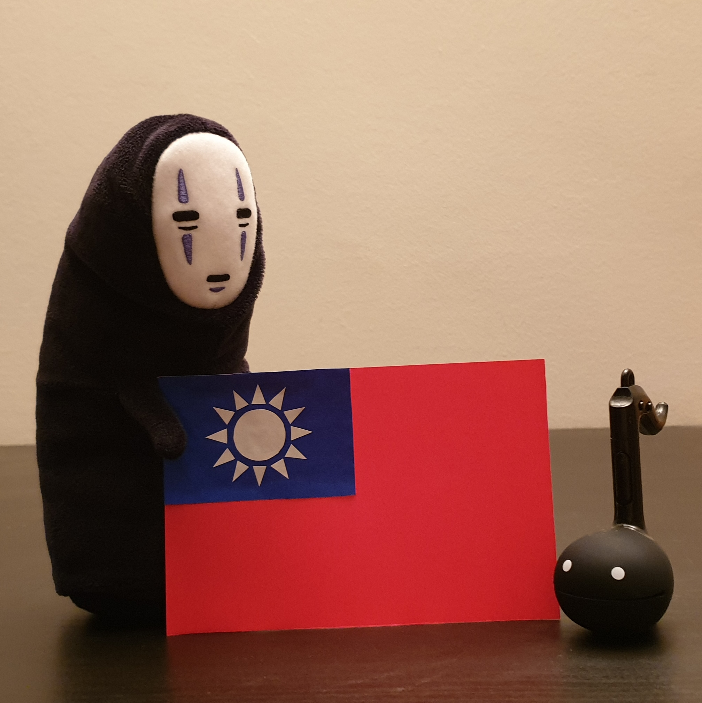

This is my name: 楊曜瑞.
This is my name in Bopomofo: ㄧㄤˊㄧㄠˋㄖㄨㄟˋ .
I learnt to count with mental abacus (珠心算). Try a practice exam! You are only allowed three minutes.
Here is No-Face (顔無し) and an otamatone (オタマトーン) posing beside a certain handcrafted Red White and Blue flag.
